Chapter 03
About me
I am an electrical engineering and physics student at Northeastern University. In short, if I were to describe the essence of myself in one sentence, I'd say that I love to simply create. I have great passion for circuit design, game development, soundtrack production, photography, visual arts, and creative writing. This website holds all my work, from engineering projects, to worldbuilding creative writing projects.
My inspirations and consumption (of music, art, media) are very important to me and I consider them identity defining. To the right, you will see a vertical display of all the artists/artwork that are very important to my identity, pieces that have inspired me and have stayed through my journey. You can use the mouse wheel to scroll even faster through them.
To navigate my site, you must type commands (type "help" and enter to see all commands). I kept things relatively simple; there are three distinct sections
If you are curious to see my engineering/software PROJECTS, type "vomit" and enter. This word choice represents what I put out in the world. Here I have my documentation, schematics, github links and descriptions of what I do.
If you'd like to checkout my ART, MUSIC, PHOTOGRAPHY or KNOWLEDGE, type "digestion" and enter. This word choice represents what I do to process the inspirations I consume and it acts as a creative playground where I can excersise my design philosophies and creativity. I have won two photography competitions as of this date.
If you'd like to checkout my INSPIRATIONS and my thoughts regarding the games I play, music I listen to and films/shows I watch, type "consumption" and enter. I am extremely passionate about the things I consume and only worthy consumptions make it to this section, things that have really been identity defining to me. ...
The wall
Work that shaped how I make things.
11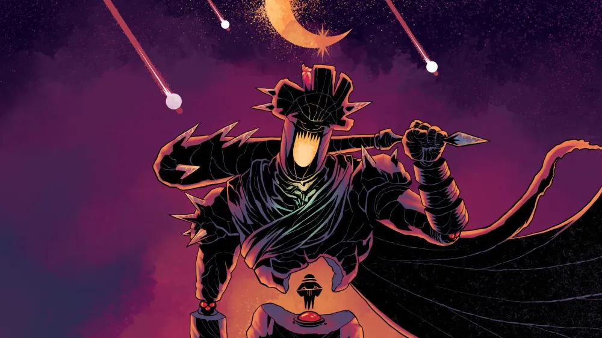
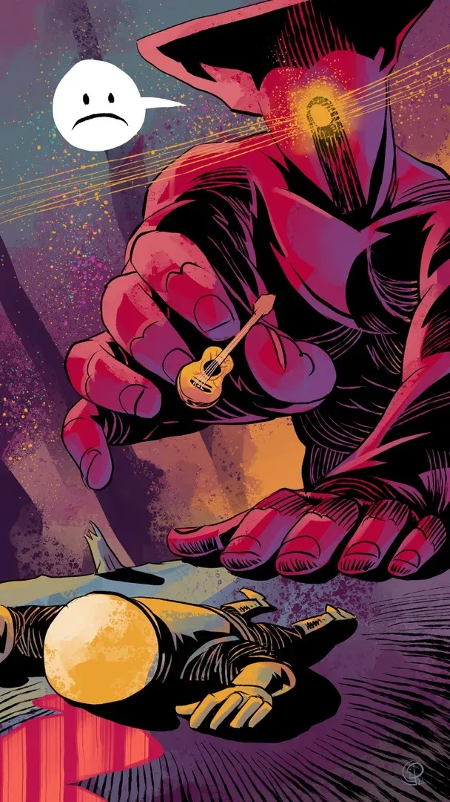
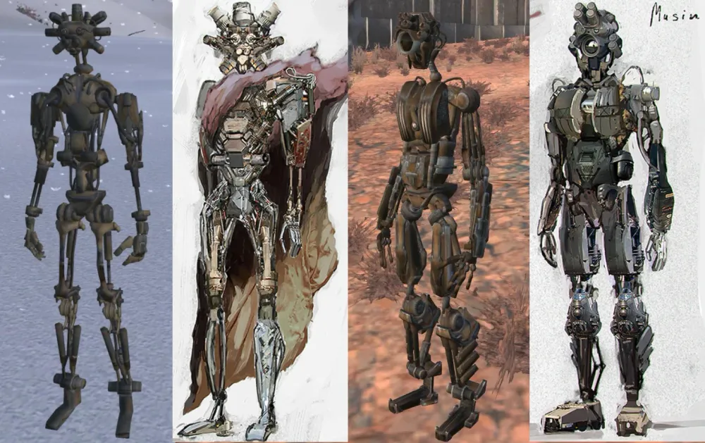
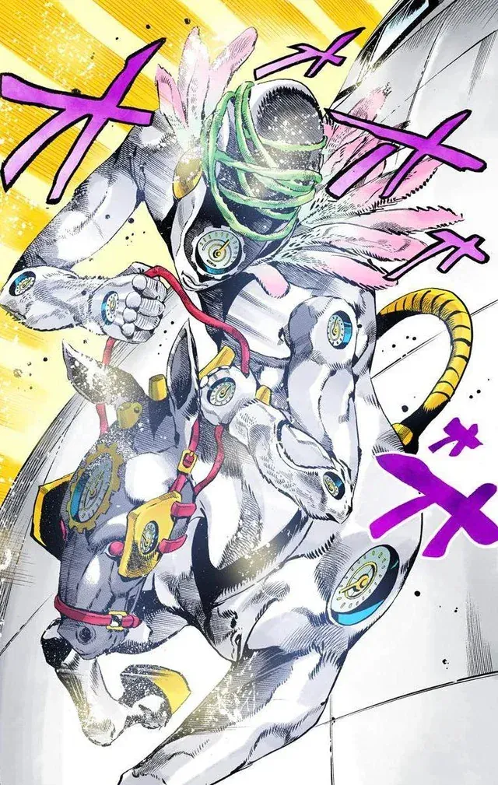
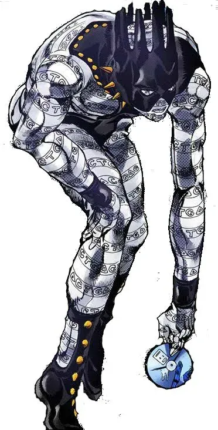
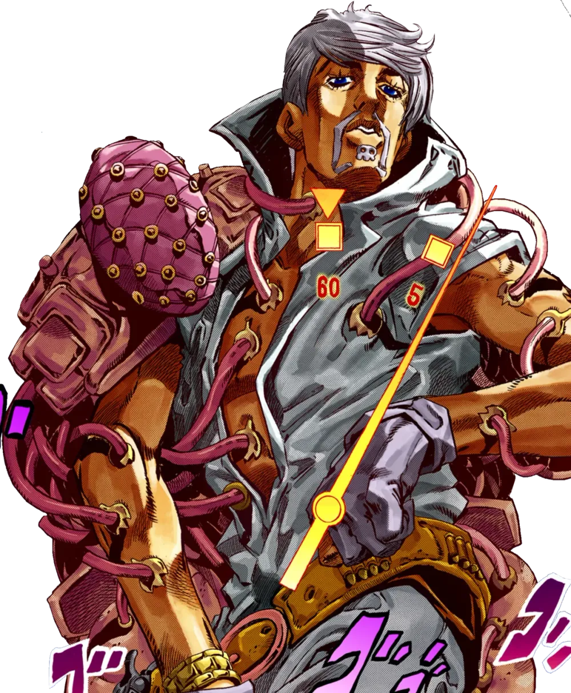
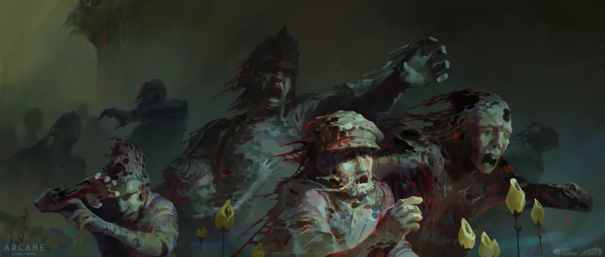
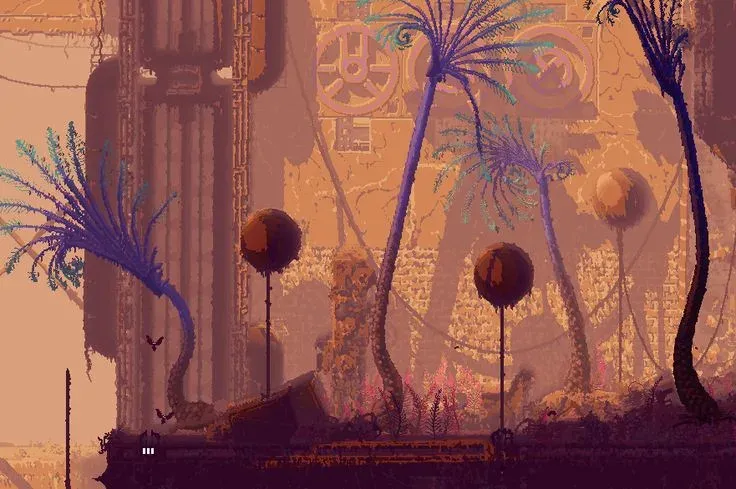
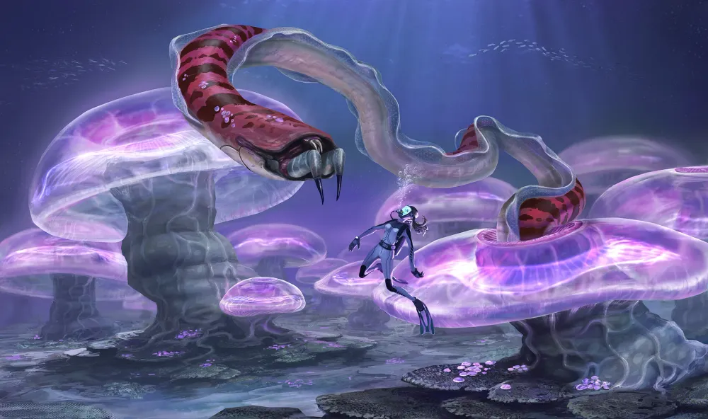
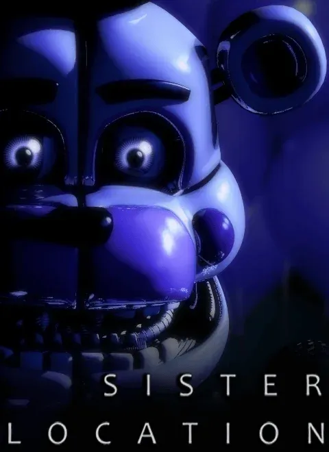
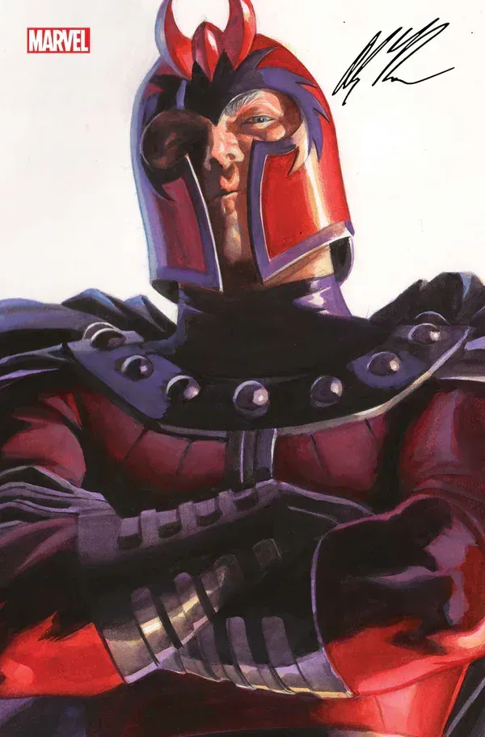